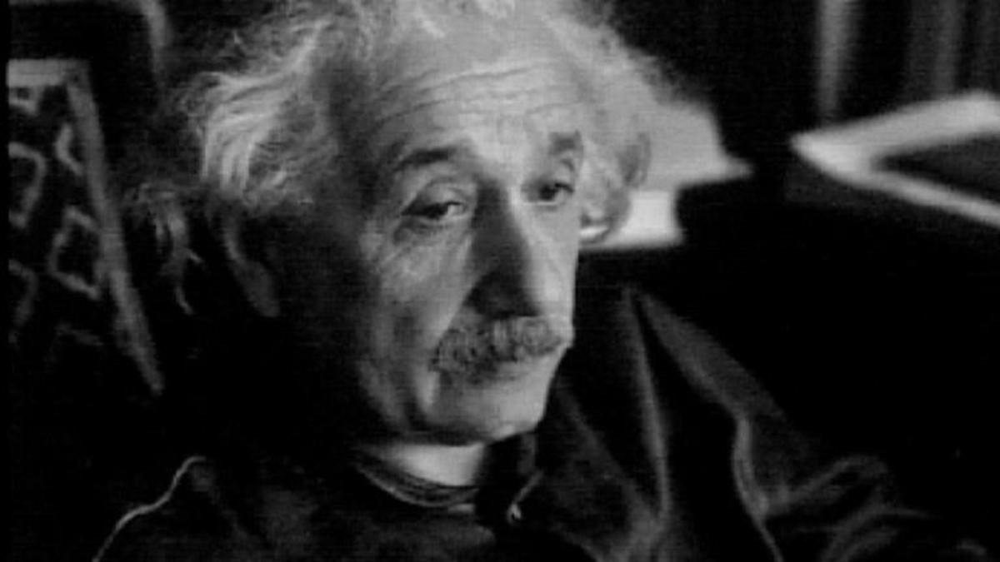

Albert Einstein

I know not with what weapons World War III will be fought, but World War IV will be fought with sticks and stones.
- Albert Einstein
Life Timeline of Albert Einstein:
- 1879
- This timeline starts on March 14, 1879 when Albert Einstein was born in Ulm, Germany. His parents were Hermann and Pauline Einstein
- 1880
- The family move to Munich
- 1881
- His sister Maja (Maria) is born
- 1884
- he Compass - When he was only five years old his father showed Albert a pocket compass and he was fascinated by the thought that something unseen was moving the needle
- 1885-1888- The Einstein family did not observe Jewish religious practices and Albert attended a Catholic elementary school
- 1889
- Albert Einstein is introduced to a family friend called Max Talmud who introduced the boy to books on science and mathematics. Albert starts his quest for facts and information available about the sciences. He attends the Luitpold-Gymnasium in Munich for the next six years
- 1894
- Due to financial reasons the Einstein family move from Munich to Pavia, Italy. Albert is left in Munich to finish his studies but soon decides to follow the family to Italy
- 1895
- He is sent to the Swiss town of Aarau to finish high school.
- 1896
- Albert graduates from high school at the age of 17 and enrols at the ETH (the Federal Polytechnic) in Zurich. He renounces his German citizenship
- 1898
- Albert meets and falls in love with Mileva Maric, a Hungarian classmate at the ETH
- 1900
- Einstein graduates in 1900 from ETH with a degree in physics
- 1901
- February 21: Albert Einstein acquires Swiss citizenship. He completes his first scientific paper on the capillary forces of a straw. Mileva becomes pregnant and moves to live with her parents in to Hungary to give birth to their baby. Albert moves to Bern.
- 1902
- Einstein and Mileva have a daughter called Lieserl Einstein who is later given up for adoption. Albert takes a job at the Swiss Patent Office
- 1903
- January 6, 1903: Einstein marries Mileva
- 1904
- May 14, 1904: Albert and Mileva's first son, Hans Albert Einstein, was born in Berne, Switzerland.
- 1905
- His Special Theory of Relativity is born and he applies his theory to mass and energy and formulates the famous equation e=mc2. Einstein has four papers published in the Annalen der Physik, the leading German physics journal. 1905 is known as Einstein's "Wonderful Year".
- 1907
- Einstein begins applying the laws of gravity to his Special Theory of Relativity.
- 1908
- Albert Einstein becomes a privatdozent (an associate professorship) at the University of Bern.
- 1909
- He resigns from Patent Office and is appointed Associate Professor of theoretical physics at Zurich University
- 1910
- July 28, 1910: Albert and Mileva's second son, Eduard, was born in Munich. He writes a paper on critical opalescence that described why the sky is blue.
- 1911
- Einstein predicts bending of light. He is appointed Professor of theoretical physics at the German University of Prague
- 1913
- He is appointed Professor of theoretical physics at the Federal Institute of Technology, Zurich and works on his new Theory of Gravity
- 1914
- Albert and Mileva separate and live apart. Einstein is appointed Professor at University of Berlin WW1 begins and Einstein signs anti-war "Manifesto to Europeans"
- 1915
- Einstein completes the General Theory of Relativity. He joins the "New Fatherland League" a pacifist organisation
- 1916
- His General Theory of Relativity is published
- 1917
- Einstein writes his first paper on cosmology. He is Appointed Director of Kaiser Wilhelm Institute for Physics in Berlin
- 1918
- Einstein falls seriously ill and is nursed by his cousin, Elsa Einstein Loewenthal
- 1919
- February 14, 1919: Einstein and Mileva divorce and Einstein marries his cousin Elsa on May 29. A solar eclipse proves Einstein's General Theory of Relativity
- 1921
- Einstein visits to the U.S. and lectures at Princeton University on theory of relativity
- 1922
- Albert Einstein is awarded the Nobel Prize in physics for 1921
- 1923
- Visits the Far East and Spain where he lectures at various universities
- 1924
- The "Einstein-Institute" in Potsdam begins its activities
- 1925
- Visits various countries in South America. He joins the Board of Governors and Academic Council of The Hebrew University
- 1927
- He begins to develop the foundation of quantum mechanics with Niels Bohr.
- 1928
- Einstein begins pursing his idea of a unified field theory. He becomes ill and enlargement of the heart is diagnosed
- 1930-1933
- Einstein makes several visits to the USA delivering lectures at universities
- 1933
- January: Adolf Hitler appointed Chancellor of Germany Albert Einstein leaves Germany and emigrates to U.S. in September and settles in Princeton, New Jersey where he assumes a post at the Institute for Advanced Study.
- 1934
- The World As I See It published
- 1935
- The Einstein-Podolsky-Rosen paradox is published
- 1936
- Elsa Einstein dies
- 1939
- World War 2 starts and Albert Einstein warns President Roosevelt that Germany might build an atomic bomb. He then recommends nuclear research
- 1940
- Einstein becomes a citizen of the United States but also retains his Swiss citizenship.
- 1943
- Works with the Research and Development Division of the U.S. Navy on Ammunition and Explosives
- 1945
- WW2 ends with the terrible nuclear bombing of Hiroshima and Nagasaki
- 1946
- Einstein is appointed chairman of the Emergency Committee for Atomic Scientists
- 1947
- He works on behalf of the cause for disarmament
- 1949
- Mileva dies
- 1952
- Albert Einstein is offered presidency of the State of Israel
- 1955
- Co-signs the Russell-Einstein Manifesto warning of the nuclear threat. April 17: Albert Einstein experienced internal bleeding. April 18: He died in Princeton Hospital at the age of 76